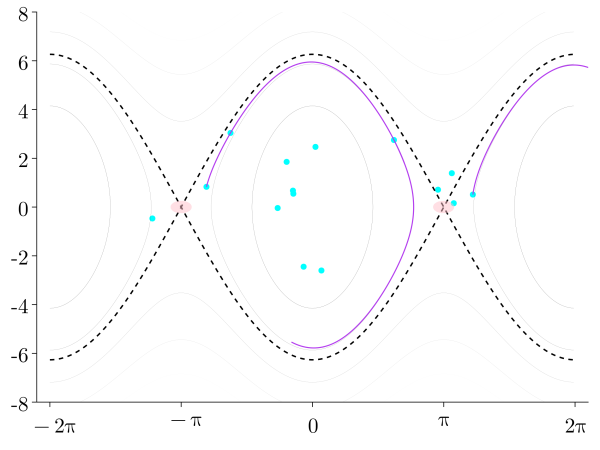

Hybrid Systems
- Exhibit both continuous state flow and discrete state transitions
- Examples: room temperature control, contact-rich robots
- We tackle two main challenges in the control of contact-rich robots


Challenge 1: Mode Changes

- Contacts cause instantaneous changes in the dynamics and states.
- Potential contacts grow exponentially, making controller inference difficult.
Challenge 2: Existing Methods
Reinforcement learning 
- Strengths
-
More general
Unknown dynamics OK - Weaknesses
-
Sample complexity
Stability guarantees?
Bayesian Neural Passivity-based Control 
- Strengths
-
Stability guarantees
Closed-form policy
Reasons about model uncertainties
Robustness via Bayesian Learning
System Parameter Uncertainty and Measurement Noise

Mixture of Experts (MOE): Old Faithful
- Objective: learn two expert Gaussian models that represent dataset
- The experts are chosen as
- Prediction is a weighted-average of experts

- The gating network is a neural net
- Divides the input space into partitions
- Expectation Maximization: maximizes log likelihood
State Sampling
Objective: meet performance for various initial states





Results
- The contact-aware MOE controller
- leverages the impacts from the wall
- switches to a policy that rapidly brakes to assist in the catching process


Our Methods
| NeuralPbc | NeuralIdaPbc |
|---|---|
| neural net | quadratic in |
| Sample state space | Sample configuration space |
| No stability certificate | Stability certificate |
| More flexible | As applicable as IdaPbc |
Robustness via Bayesian Learning
System Parameter Uncertainty and Measurement Noise
Infinite-Horizon Best Performance


Optimal Controller

Optimal controller minimizing

Minimal expected cost
Optimal Controller
- Optimal control parameter a nontrivial function of and .
- Bayesian learning strikes the right trade-off.
Robustness via Bayesian Learning
- NeuralPbc assumes a nominal model
- The trained controller must not overfit on the observations generated from the nominal model
- Our method: is a Bayesian neural network
- achieves the performance objective for samples
- searches for ensemble of parameters that meet the desired performance
Deterministic vs. Bayesian

- Subtracting rings from the wheel
- decreases wheel mass
- decreases wheel and pendulum inertia
- moves the center of mass

Rimless Wheel

- Performance objective: achieve hip speed m/s
- Uncertainty in elevation under each spoke
Deterministic vs Bayesian


Future work


Acknowledgments


DiffEqFlux.jl Demo
Learning where is a neural network
Regress on MSE between trajectory of and data